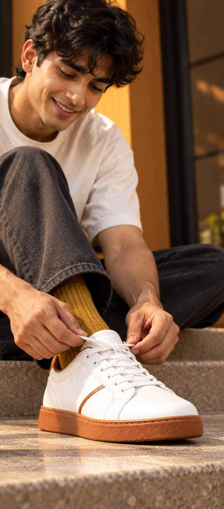
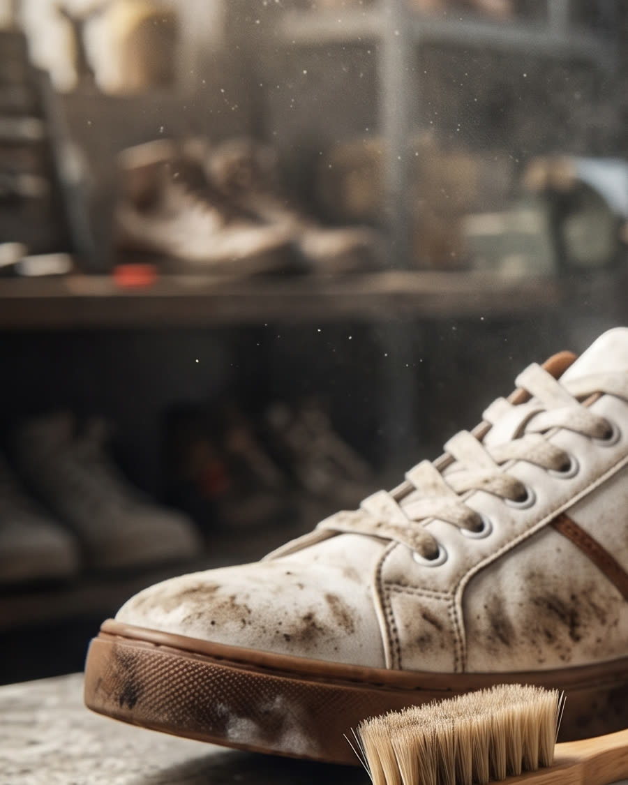

Sneaker deep clean
Uppers, midsoles, outsoles and laces washed separately, by hand, with material-safe cleaners. Yellowed midsoles brought back where possible.
How it works
Every pair that comes in gets a tag and a route. Drag the handle to walk through it.
Stage 01 of 05
Pickup
Message us on WhatsApp and we collect from your door anywhere in Pune or PCMC. Pickup and drop are free.

What we do
Shoes, bags and luggage. If it is made of leather, suede, canvas or knit and it has seen a Pune monsoon, it can be brought back.
Uppers, midsoles, outsoles and laces washed separately, by hand, with material-safe cleaners. Yellowed midsoles brought back where possible.
Dry cleaning for suede and nubuck, conditioning and polish for leather, so the grain stays soft instead of cracking.
Colour touch-up, edge and sole paint, scuff work and refinishing for shoes that are worn down rather than only dirty.
Sole and heel replacement, re-stitching, loose panels and separated soles bonded back at the repair bench.
Handbags, backpacks, office bags and trolleys cleaned and conditioned with the same material-by-material approach.
A water and stain repellent finish applied at the end, so the next spill sits on the surface instead of soaking in.

The workshop
1985
Markk started as a repair bench in Pune in 1985, back when a worn pair was mended rather than replaced. Soles were stitched, heels were rebuilt, leather was fed and polished until it looked like it had never been out in the rain.
What changed is the footwear, not the craft. Knit uppers, foam midsoles, suede panels and glued constructions all need their own treatment, so the bench grew into a laundry with a bench still in it. The same hands that repaired shoes forty years ago now clean, restore and protect them.
Visit or book
Free pickup and drop runs across Pune and PCMC. Send a message with what you have and where you are, and we will arrange a collection.